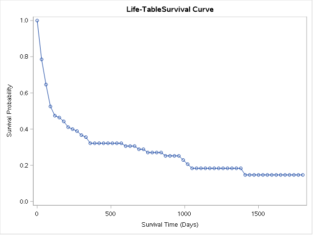
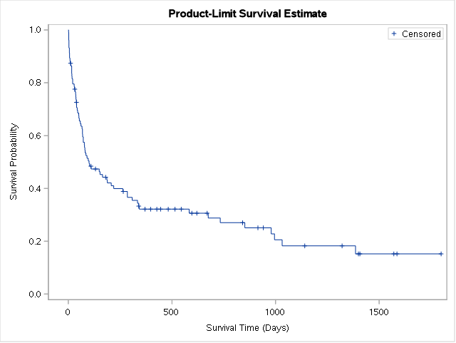

Output Added:
-------------
Name: ProductLimitEstimates
Label: Product-Limit Estimates
Template: Stat.Lifetest.ProductLimitEstimates
Path: Lifetest.Stratum1.ProductLimitEstimates
-------------
Output Added:
-------------
Name: Quartiles
Label: Quartiles of the Survival Distribution
Template: Stat.Lifetest.Quartiles
Path: Lifetest.Stratum1.TimeSummary.Quartiles
-------------
Output Added:
-------------
Name: Means
Label: Mean
Template: Stat.Lifetest.Means
Path: Lifetest.Stratum1.TimeSummary.Means
-------------
Output Added:
-------------
Name: SurvivalPlot
Label: Survival Curve
Template: Stat.Lifetest.Graphics.ProductLimitSurvival
Path: Lifetest.Stratum1.SurvivalPlot
-------------
Output Added:
-------------
Name: CensoredSummary
Label: Censored Summary
Template: Stat.Lifetest.CensoredSummary
Path: Lifetest.CensoredSummarySAS
Remarque: Sélection des outputs
Selon le type d’analyse la totalité des outputs ne seront pas reproduits (ods include ou ods exclude pour la sélection). Un problème spécifique s’observe pour le tableau des estimateurs de Kaplan-Meier qui est particulièrement illisible en présence d’un nombre important d’observations censurées.
Exemple pour proc lifetest: noms des outputs récupérés dans la log
Utiliser de préférence le nom figurant dans la ligne path: (si comparaison de deux strates, le nom figurant dans la ligne name est identique).
Analyse non paramétrique
Méthode actuarielle
Avec une longueur d’intervalle fixe égale à 30 jours.
La durée médiane est donnée par la colonne résidual median time. Sur la première ligne, il s’agit de la durée médiane sur toutes les personnes exposées au risque. Dans les lignes suivante, cette durée médiane est recalculée pour les personnes restant exposées au risque dans chaque intervalle.
proc lifetest data=trans method=lifetable width=30;
time stime*died(0);run;


Méthode Kaplan-Meier
Le tableau des estimateurs ne sera pas reporté (voir intro du document).
Pour récupérer ces estimateurs, on peut les récupérer via l’instruction output et les exporter, par exemple, dans un tableur.
ods exclude Lifetest.Stratum1.ProductLimitEstimates;
proc lifetest data=trans;
time stime*died(0); run;


Warning sur la durée moyenne reportée Sauf exception ne pas interpréter le tableau donnant la durée moyenne. Se reporter à l’estimation des RMST plus bas.
Comparaison des fonctions de survie
Tests du log rank
ods exclude Lifetest.Stratum1.ProductLimitEstimates Lifetest.Stratum2.ProductLimitEstimates ;
proc lifetest data=trans;
time stime*died(0);
strata surgery / test=all;
run;


Comparaison des RMST
Disponible avec le dernier module stat de Sas base (Sas-Stat 15.1 novembre 2018).
ods exclude Lifetest.Stratum1.ProductLimitEstimates;
proc lifetest data=trans rmst plots=(rmst);
time stime*died(0);
strata surgery; run;
SAS STUDIO: en attente de la mise à jour du module SAS-STAT (on a 5 ans de retard)
Modèle de Cox
Estimation du modèle
proc phreg data=trans;
model stime*died(0) = year age surgery ;
run;
Tests de l’hypothèse PH
Test de Grambsch Therneau
Demande au moins l’avant dernière version de Sas/Stat (2016?).
Le test est exécuté directement dans l’instruction phreg (ajouter zph). L’option global permet de récupérer le résultat du test omnibus (attention rejette facilement \(H_0\) - hypothèse PH respectée - lorsque le nombre de degrés de liberté est élevé).
ods select PHReg.zphTest;
proc phreg data=trans zph(global noplot);
model stime*died(0) = year age surgery ;
run;
Par défaut SAS utilise la transformation \(f(t)=t\) (idem Stata). Pour obtenir l’option par défaut de R \(f(t) = 1 - KM(t)\):
ods select PHReg.zphTest;
proc phreg data=trans zph(global noplot transform=km);
model stime*died(0) = year age surgery ;
run;
Interaction avec la durée
Estimation d’un modèle avec indicatrices
La covariable doit être sous forme d’indicatrice (binaire: (0,1)). Ce qui est le cas ici avec la variable surgery.
Exemple avec une covariable X à 3 modalités codée 1,2,3.
Estimation du modèle de Cox avec l’instruction class (ref: X=1)
proc phreg data=base;
class X(ref="1");
model variable_dur*variable_cens(0) = X; run;Estimation du modèle de Cox avec indicatrices
data base; set base;
X1 = X=1;
X2 = X=2;
X3 = X=3; run;
proc phreg data=base;
model variable_dur*variable_cens(0) = X2 X3; run;La variable d’intéraction (\(surgeryt = surgery\times stime\)) est générée, le temps de l’estimation après l’instruction model.
ods select PHReg.ParameterEstimates;
proc phreg data=trans ;
model stime*died(0) = year age surgery surgeryt ;
surgeryt = surgery*stime;
run;
Variable dynamique
Warning: opération en ‘aveugle’
Contrairement à R et Stata, la base n’a pas à être splittée, on ne peut pas vérifier si la variable dynamique a été correctement créée. La variable dynamique, qui peut être appréhendée comme une variable en intéraction avec la durée, est générée après l’instruction model.
Ici la tvc prendra la valeur 1 lorsque stime>wait, 0 sinon.
ods select PHReg.ParameterEstimates;
proc phreg data=trans;
model stime*died(0) = year age surgery tvc ;
tvc = transplant=1 and stime>=wait;
run;
Modèle à temps discret
Mise en forme
On utilise une boucle pour répliquer les lignes sur la valeur de la durée. La nouvelle variable de durée (t) sous forme de compteur est générée automatiquement.
data td; set trans;
do t=1 to mois;
output;
end; run;
data td; set td;
if t<mois then died=0;
t2=t*t;
t3=t2*t; run;Durée continue
Estimation du modèle
ods select Logistic.FitStatistics;
proc logistic data=td;
model died(ref="0") = t t2 t3 year age surgery ; run;
Durée discrète
Pour l’exemple on va regrouper la durée par ses quartiles. Pour chaque individu, on conserve seulement une observation dans chaque quartile.
proc rank data=td out=td2 groups=4;
var t;
ranks tq4;
run;
data td2; set td2;
id2=put(id, 3.);
tq42=put(tq4, 1.);
g=id2 || tq42; run;
proc sort data=td2; by id tq4; run;
data td2; set td2;
by g;
if LAST.g; run;Estimation
proc logistic data=td2;
class tq4 / param=ref;
model died(ref="0") = tq4 year age surgery; run;

Modèles paramétrique
On utilise la procédure proc lifereg et on indique le type de distribution
proc lifereg data=trans;
model stime*died(0) = year age surgery /D=WEIBULL;
run;

proc lifereg data=trans;
model stime*died(0) = year age surgery /D=LLOGISTIC;
run;

Risques concurrents
Non paramétrique
On indique en option la cause d’intérêt avec eventcode=valeur , les autres étant considérées commes des risques concurrents.
proc lifetest data=trans plots=CIF;
time stime*compet(0) / eventcode=1; run;


Pour récupérer le test de Gray, on utilise l’instruction strata.
proc lifetest data=trans plots=CIF;
time stime*compet(0) / eventcode=1
strata surgery; run;

Modèles
Modèle de Fine-Gray
proc phreg data=trans;
model stime*compet(0) = year age surgery / eventcode=1 ;
run;
Modèle logistique multinomial à temps discret
data td; set trans;
do t=1 to mois;
output;
end;
run;
data td; set td;
if t<mois then compet=0;
t2=t*t
run;proc logistic data=td;
model compet(ref="0") = t t2 year age surgery / link=glogit;
run;